<h3>Test Orig Diff DIFF</h3>
solid_ramp<br/>
<a href="solid_ramp__test.png"></a>
&nbsp;&nbsp;<a href="solid_ramp__orig.png"></a>
&nbsp;&nbsp;<a href="solid_ramp__dif0.png"></a>
&nbsp;&nbsp;<a href="solid_ramp__dif1.png"></a>
<br><br>
rect_graphs<br/>
<a href="rect_graphs__test.png">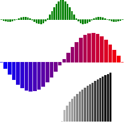</a>
&nbsp;&nbsp;<a href="rect_graphs__orig.png">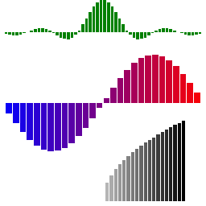</a>
&nbsp;&nbsp;<a href="rect_graphs__dif0.png"></a>
&nbsp;&nbsp;<a href="rect_graphs__dif1.png">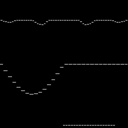</a>
<br><br>
blend_black<br/>
<a href="blend_black__test.png">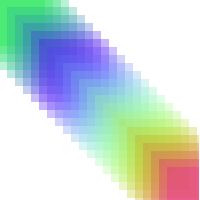</a>
&nbsp;&nbsp;<a href="blend_black__orig.png">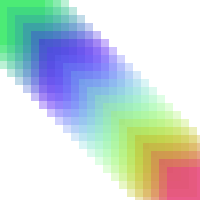</a>
&nbsp;&nbsp;<a href="blend_black__dif0.png"></a>
&nbsp;&nbsp;<a href="blend_black__dif1.png"></a>
<br><br>
poly<br/>
<a href="poly__test.png"></a>
&nbsp;&nbsp;<a href="poly__orig.png"></a>
&nbsp;&nbsp;<a href="poly__dif0.png">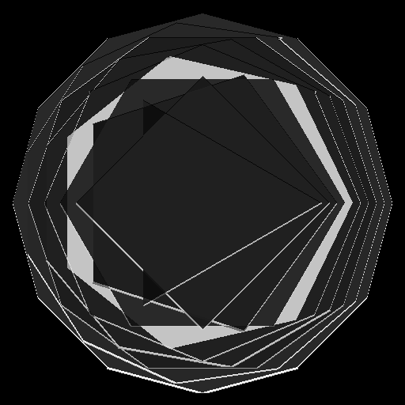</a>
&nbsp;&nbsp;<a href="poly__dif1.png"></a>
<br><br>
poly_center<br/>
<a href="poly_center__test.png">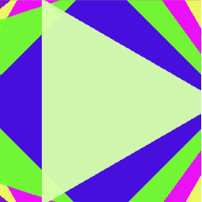</a>
&nbsp;&nbsp;<a href="poly_center__orig.png"></a>
&nbsp;&nbsp;<a href="poly_center__dif0.png">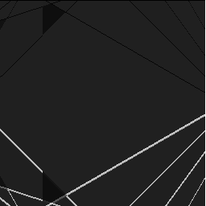</a>
&nbsp;&nbsp;<a href="poly_center__dif1.png"></a>
<br><br>
blendmodes<br/>
<a href="blendmodes__test.png">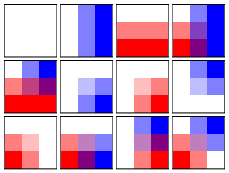</a>
&nbsp;&nbsp;<a href="blendmodes__orig.png">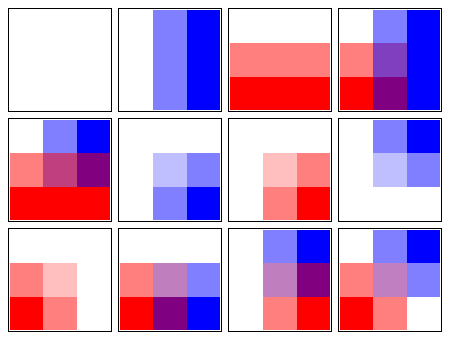</a>
&nbsp;&nbsp;<a href="blendmodes__dif0.png">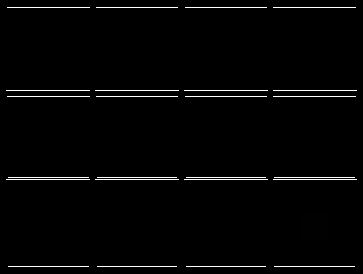</a>
&nbsp;&nbsp;<a href="blendmodes__dif1.png">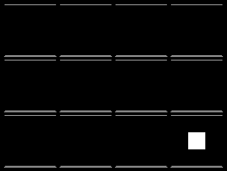</a>
<br><br>
